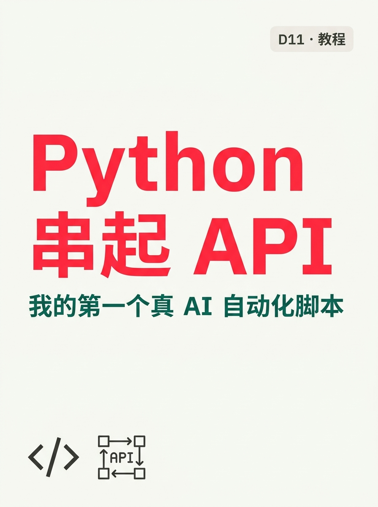
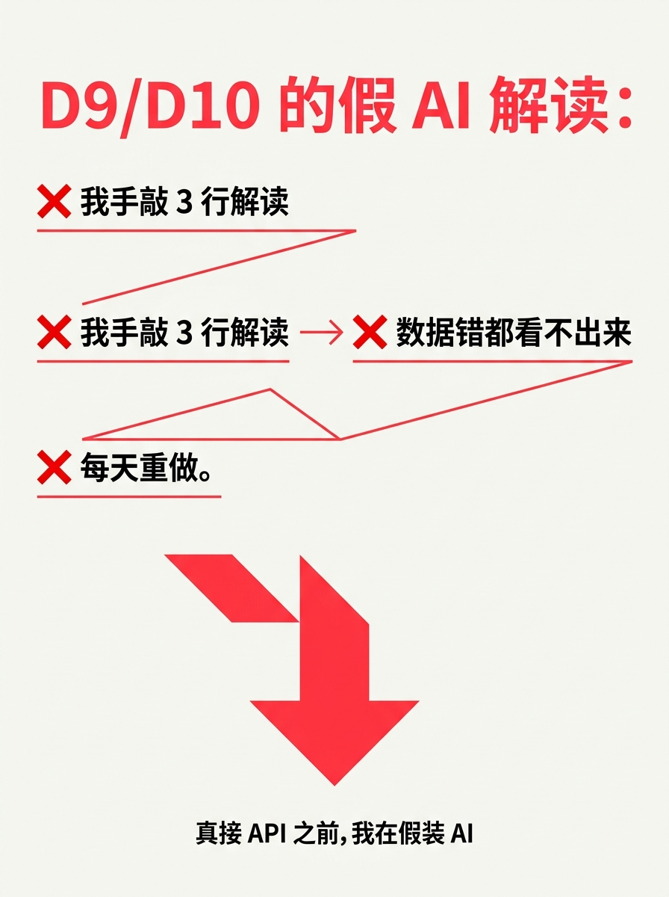
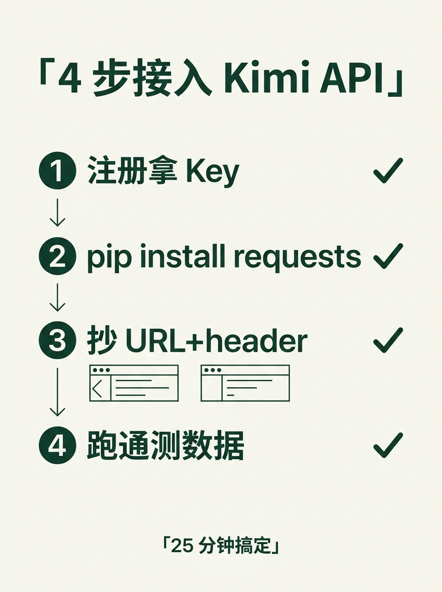
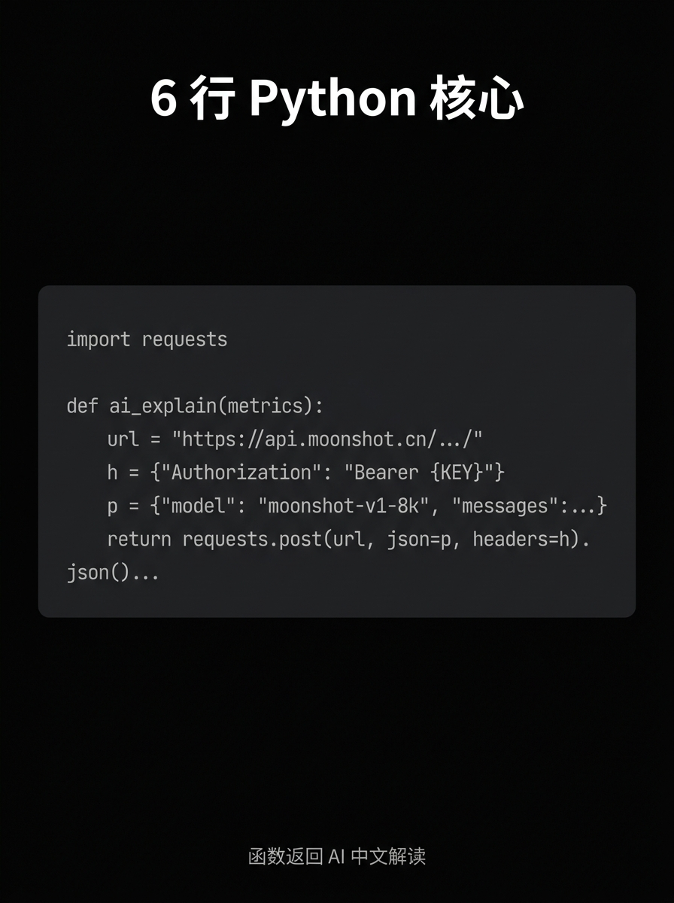
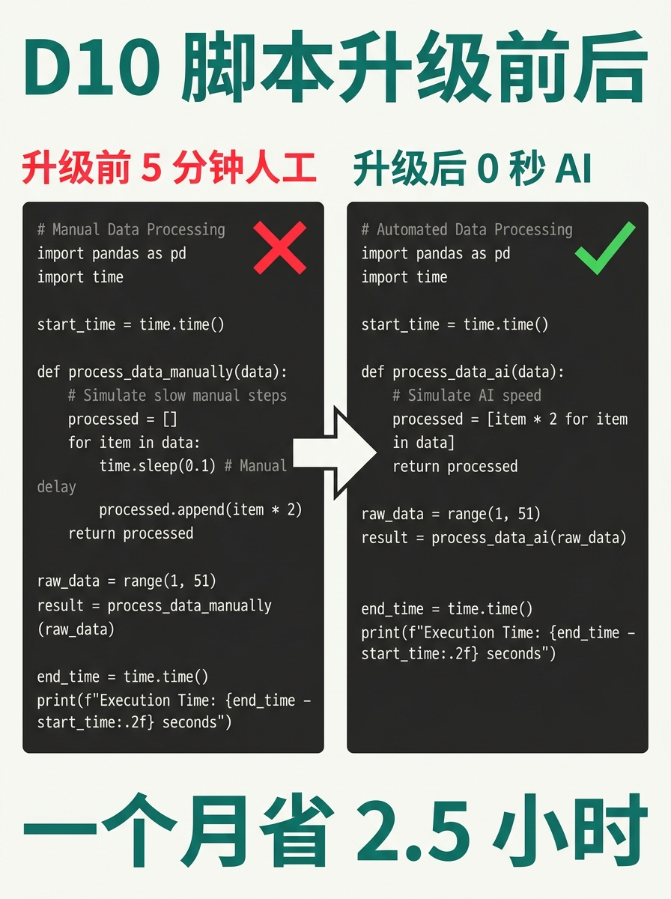
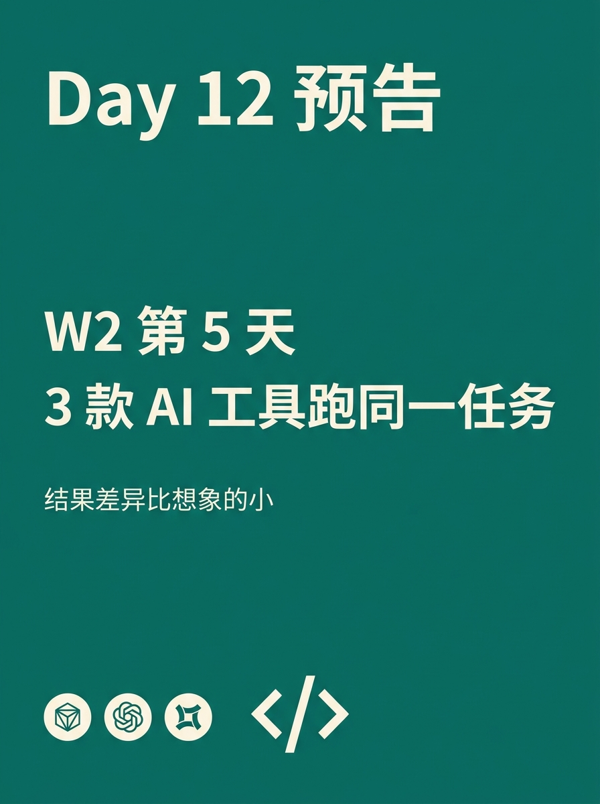

使用说明:所有内容已按发布标准预排好,发布前请用最下方 3 个复制按钮。
6 张图按顺序上传,标题"商品图自动命名 · 30 分钟变 5 分钟"(XHS 上限 20 字 ✓)。






Python 串起 Kimi API · 我的第一个真 AI 自动化脚本
D9/D10 的"AI 解读"是手敲的假 AI。
今天升级:Python 串起 Kimi API,数据 → 自动解读 → 进日报。
───── 4 步接入 ─────
① 注册 kimi.moonshot.cn → 拿 Key
② pip install requests
③ 抄 1 个 URL + header
④ 用 D10 的 4 项指标当输入
25 分钟搞定。
───── 6 行核心代码 ─────
import requests
def ai_explain(metrics):
url = "https://api.moonshot.cn/v1/chat/completions"
h = {"Authorization": f"Bearer {KEY}"}
p = {"model": "moonshot-v1-8k",
"messages": [{"role":"user",
"content":f"解读: {metrics}"}]}
return requests.post(url, json=p, headers=h
).json()["choices"][0]["message"]["content"]
───── D10 脚本升级 ─────
前: print(dt.date.today(), gm("yesterday"))
后: ai_explain(gm("yesterday"))
→ 中文解读直接进日报
0 秒 vs 5 分钟,一个月省 2.5 小时
───── 2 个坑 ─────
❌ 401 → Key 少空格
→ 单独变量,print 长度
❌ Rate Limit → 每分钟 3 次
→ 加 time.sleep(20)
───── 接入 3 条 ─────
✅ Key 不进 git
✅ Prompt 模板化
✅ 人工只复核异常
───── Day 12 预告 ─────
3 款 AI 工具跑同一任务
猜:哪个赢?
评论区:你接过哪个 API?
告诉我你接的是"Kimi" / "DeepSeek" / "GPT" / "还没接"哪一档
"还没接"档多的话明天专写"3 个 API 比对" 👇
关注我,看 30 天跑完我会得出什么结论 🌱
#前端转AI电商
#Python
#KimiAPI
#AI自动化
#程序员副业
♡ 收藏
💬 评论
↗ 分享
📋 一键复制
📊 D11 数据复盘
规则成本: 4 段命名 = 1 小时定稿,后面所有商品图复用(只要不新造类目/颜色/场景就不改规则)
脚本成本: 4 行 Python + 1 个类目文件夹总览表(共 5 分钟写完),跑 220 张图 90 秒
实测数字: 手动 30 分钟 / 张 → 脚本 5 分钟 / 220 张(总耗时含 AI 复核)= 省下 25 分钟/次
异常处理: 5 张异常必须人工修(AI 推荐错/颜色写错/编号断号)= 流程化思维里的"复核关卡"不可省
互动钩子: 问"手动/半自动/全自动"看你现在的状态 —— 状态型钩子,W2 工具类实测天然高评论
🚀 发布前 15 分钟 SOP
- 打开小红书 App → 创建笔记
- 选 6 张图(封面 1 + 内页 5),按顺序排好
- 选 3:4 竖图
- 标题:Python 串起 Kimi API · 我的第一个真 AI 自动化脚本
- 正文:点"复制正文"按钮粘贴
- 加 5 个标签
- 选发布时间:周三 20:00-21:00(W2 第 3 篇 + 工具类+兑现承诺天然高互动)
- 发布
📈 发布后 24 小时 SOP
| 时间 | 动作 | 目标 |
|---|---|---|
| 10 分钟 | 自己评论 1("你现在怎么命名商品图?" + 三选一) | 激活引导型评论区 |
| 30 分钟 | 每条评论都认真回复(尤其选"半自动"的继续追问 1-2 句) | 评论区密度提升推荐 |
| 2 小时 | 截图保存首日数据 | W2 复盘素材 |
| 6 小时 | 看一次数据(曝光/收藏/评论/三选一分布) | 判断是否二次推 |
| 24 小时 | 统计新一轮"接入 API"票数(满 20 D12 兑现"3 个 API 比对") | 决定 D12 选题方向 |
🎯 Day 11 数据目标
| 指标 | 目标 | 备注 |
|---|---|---|
| 曝光 | ≥ 1500 | W2 第一篇真 AI 教程 + 代码截图天然高曝光 |
| 收藏率 | ≥ 8% | Python 代码 + 接入清单天然高收藏(留底用) |
| 评论 | ≥ 80 | 四选一钩子(Kimi/DeepSeek/GPT/还没接),教程类精准粉评论率高 |
| 涨粉 | ≥ 100 | 程序员粉精准,涨粉率高于 D10 |
| 三选一分布 | 新一轮"接入 API" ≥ 20 | 满 20 D12 兑现"3 个 API 比对"承诺 |
💡 关键设计点
1. 标题 = 主题 + 身份
- "Python 串起 Kimi API" = 主题(用户知道在讲什么)
- "我的第一个真 AI 自动化脚本" = 身份钩子(程序员视角差异化)
- 字数 18 字,XHS 上限 20 ✓
2. 正文 = 5 段式 + 踩坑清单
- 痛点(D9/D10 假 AI + 升级必要性)
- 4 步接入(注册/装包/抄代码/跑通)
- 6 行核心(Python requests + Kimi API)
- 升级对比(D10 脚本前 5 分钟 vs 升级后 0 秒)
- 2 个坑 + 接入 3 条(401/Rate Limit + Key/prompt/复核)
3. 图文对应
- 图 01 = 封面("Python 串起 API"红色大字 + 副标"我的第一个真 AI 自动化脚本"+ + API 图标)
- 图 02 = 痛点(3 个 ❌ 列举 + 红色下降箭头,警示色)
- 图 03 = 4 步接入(① ② ③ ④ 圆形编号 + 4 个绿色 ✓ + 浏览器图标)
- 图 04 = 6 行核心(纯黑代码块背景 + 浅灰等宽字体 Python 代码)
- 图 05 = 升级对比(左红 ❌ 代码 + 右绿 ✓ 代码 + 中间箭头 + 底部大字"省 2.5 小时")
- 图 06 = Day 12 预告(墨绿背景 + "" + 3 个工具图标)
4. 升级 D9/D10 + 新钩子
- D9/D10 假 AI 解读 → D11 真 API 接入 = W2 第一次从"模拟脚本"升级到"真 AI 自动化"
- D11 是 W2 第二篇教程类(技术视角 40% 支柱),前面 D8 客服 / D9 商品图 / D10 数据复盘都是工作流
- 钩子升级:D10 三选一(手动/半自动/全自动)→ D11 四选一(Kimi/DeepSeek/GPT/还没接) → D12 兑现承诺
⚠️ 注意事项
- API Key 不进 git —— 用环境变量或 .env 文件,.gitignore 加 .env,泄漏 = 别人刷你额度
- Prompt 模板化 —— 解读 prompt 别每次临时写,抽到 config 字典,改一处全局生效
- 401 错误先 print 长度 —— 调试 API Key 必看 len(KEY) 是不是 40 位,空格/换行都能看
- Rate Limit 必 sleep —— Kimi 每分钟 3 次,加 time.sleep(20),攒 5 条批量发更省
- 正文用"我"视角 —— D9/D10 一致,程序员视角拉近距离
- 6 张图按顺序 —— 封面(钩子)→ 痛点 → 4 步接入 → 核心代码(杀手锏)→ 升级对比 → 预告
- tags 5 个版本 —— #前端转AI电商 #Python #KimiAPI #AI自动化 #程序员副业